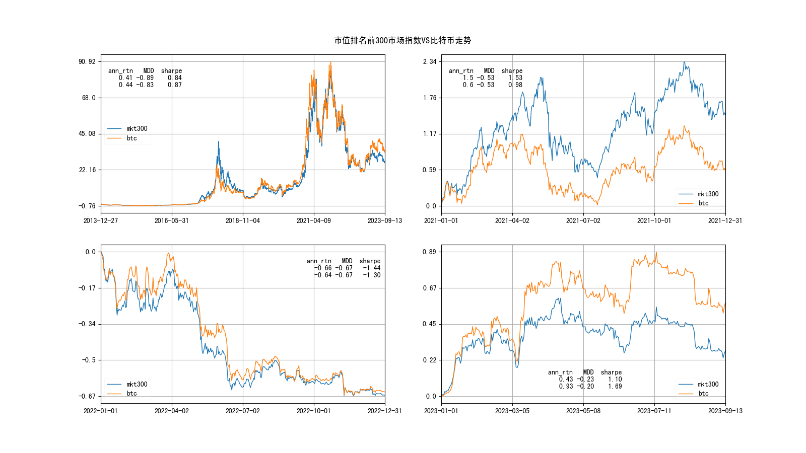

加密市场的市场因子
本文分析了加密货币的市场因子，采用了排名前300的币种构建市场因子，并阐述了其原因。TODO
进而，从数据上解释了为什么币圈的量化机构一般都用比特币作为市场基准的原因。
最后，研究了币安上线有U本位永续合约的加密货币子集，通过t检验，得出币安U本位子集具有相较于不筛选更优期望的结论。TODO
市场因子
本文的数据来源于coinmarketcap，截止到2023-09-14日，该网站上收录了超过9000种数字货币。
采用如下方法构建市场指数：
- 市值大于\(10^{6}\)美元的币作为有效币，不足的过滤掉；
- 日交易量超过\(10^5\)美元的作为有效币，不足的过滤掉；
- 每个交易日收盘（UTC时间）时，选择当日市值排名前300的币持有，如果当日全市场币的数量不足300，则满足1、2条件的全选，采用市值加权构建投资组合，忽略交易成本；
- 次日，根据新的市值排名再平衡。
如上构建的市场指数与btc对比的走势图如下：

可见市场指数与btc走势很相似，
检查两者的收益率相关性，得到如下相关性表格：
300指数与比特币收益率相关性表格
| mkt300 | btc | |
|---|---|---|
| mkt300 | 1 | 0.943 |
| btc | 0.943 | 1 |
故比特币可以作为市场指数很好的代理变量，这也就是为什么加密市场通常可以将比特币作为基准的原因。
这也揭示出加密市场除开比特币以外的头部币种，可以看作比特币的市值延拓。